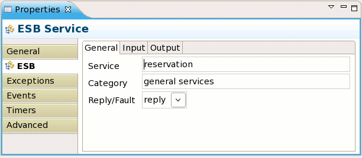
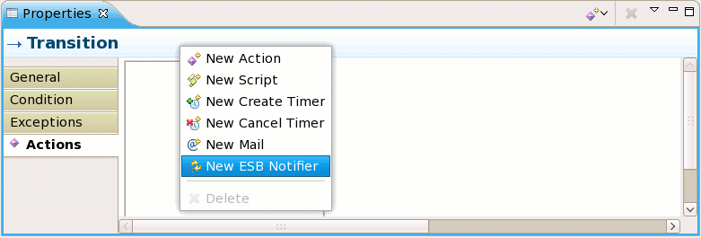

The configuration of the ESB service node was updated.
The one way notification is removed and ReplyTo/DefaultTo is now supported in the configuration panel.

ESB Notification
A new predefined action was added that can be used on transitions and events throughout the
process definition. It is a ESB notification action.

The action is configured in a similar way as the ESB service node.